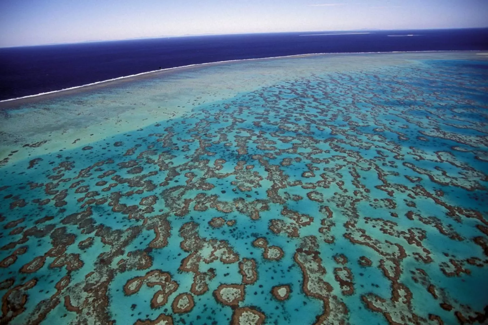

Lista dos Recifes Registrados

Grande Barreira de Corais
Localização: Austrália
Índice de Branqueamento Máximo: 2.6
Índice de Cobertura de Corais Vivos Mínima: 55.0%
Taxa de Mortalidade Máxima: 6.0%
Medições:
Data e Hora: 2024-06-01 10:00:00
Índice de Branqueamento: 2.6
Data e Hora: 2024-06-01 10:15:00
Índice de Cobertura de Corais Vivos: 55.0%
Taxa de Mortalidade: 6.0%

Recife Hardy
Localização: Belize
Índice de Branqueamento Máximo: 1.8
Índice de Cobertura de Corais Vivos Mínima: 80.0%
Taxa de Mortalidade Máxima: 4.5%
Medições:
Data e Hora: 2024-06-01 10:30:00
Índice de Branqueamento: 1.8
Data e Hora: 2024-06-01 10:45:00
Índice de Cobertura de Corais Vivos: 80.0%
Taxa de Mortalidade: 4.5%